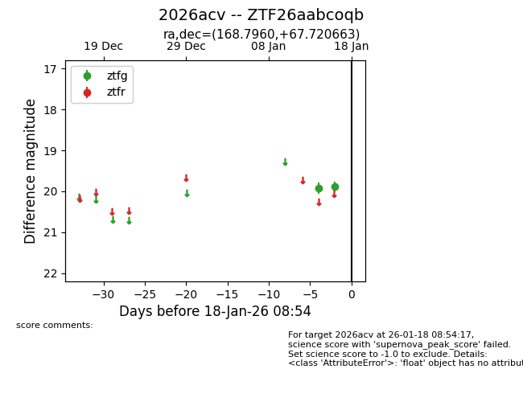
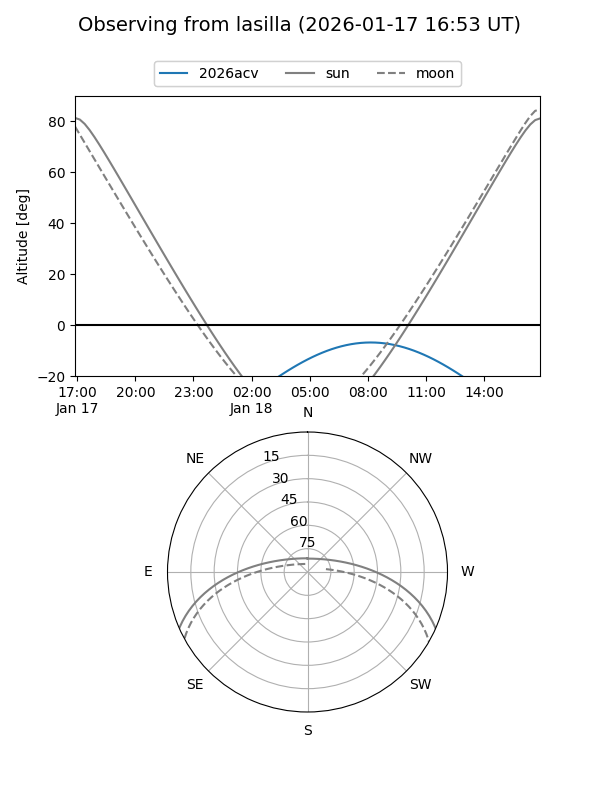
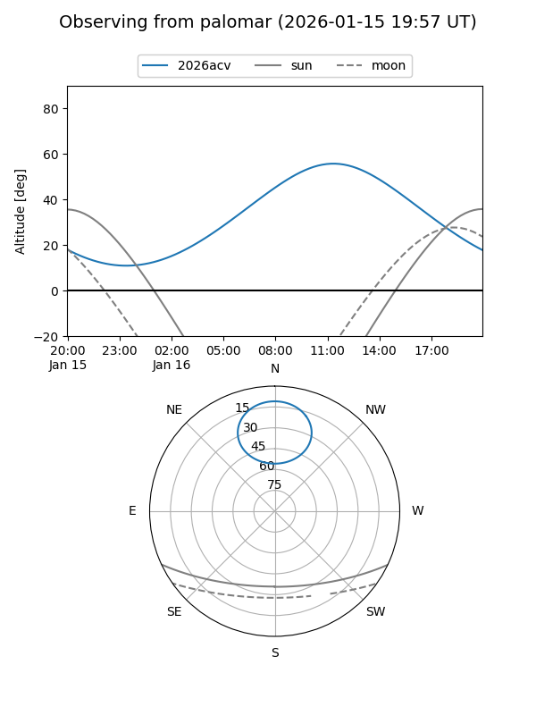
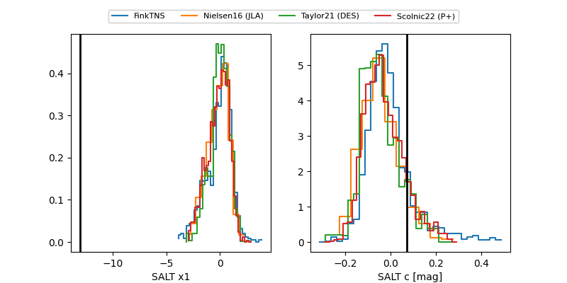

2026acv
Target 2026acv at 2026-01-18 08:55
Aliases and brokers:
FINK: link
Lasair: link
ALeRCE: link
TNS: link
YSE: link
alt names
ZTF26aabcoqb (ztf,fink_ztf)
2026acv (tns,yse)
Coordinates:
equatorial (ra, dec) = 168.7960,+67.72066
equatorial (HMS+DMS) = 11:15:11.04,+67:43:14.39
galactic (l, b) = (136.0053,+46.88927)
Flags:
Photometry:
last ztfg=19.88
2 ztfg detections
Lightcurve

Visibility


Additional plots
